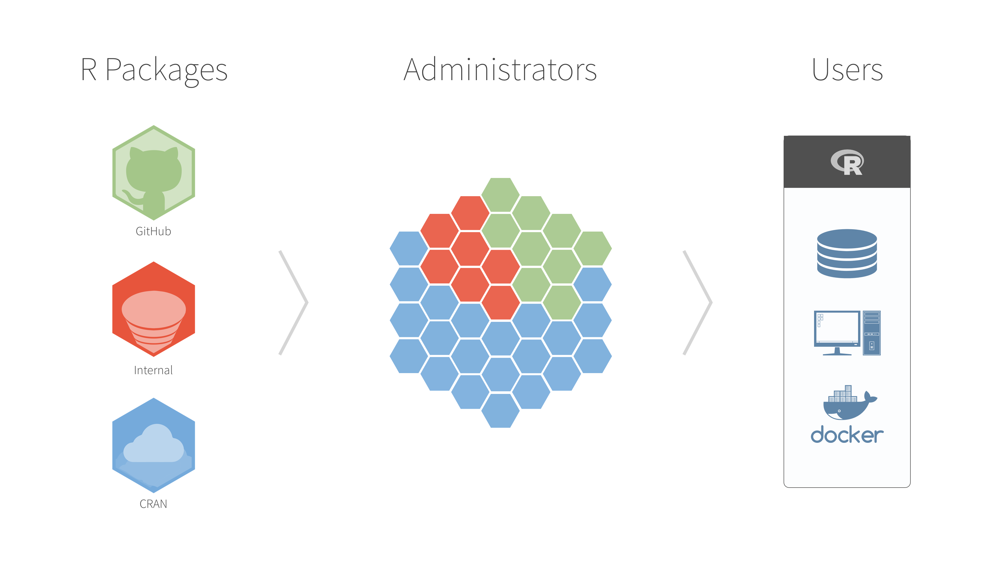
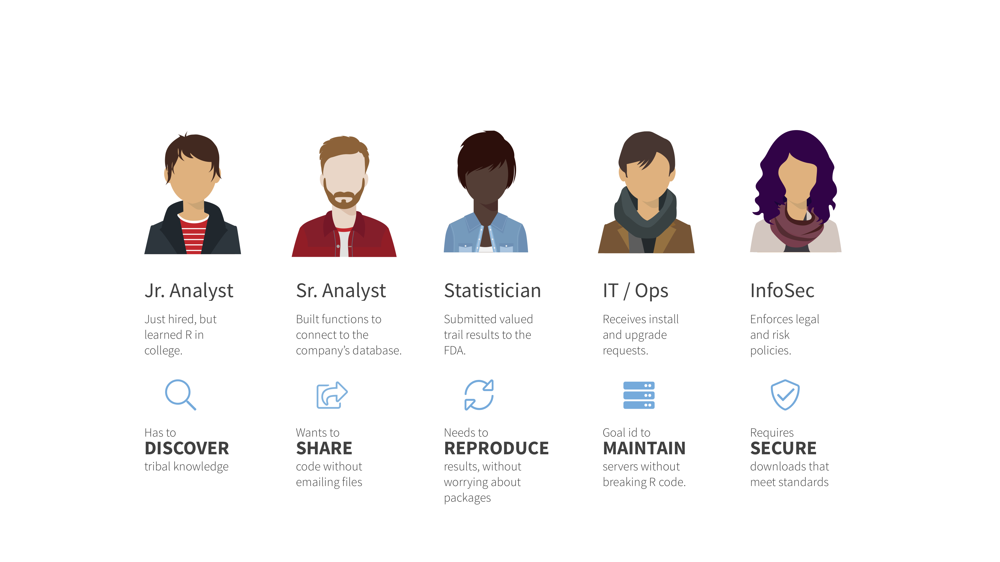
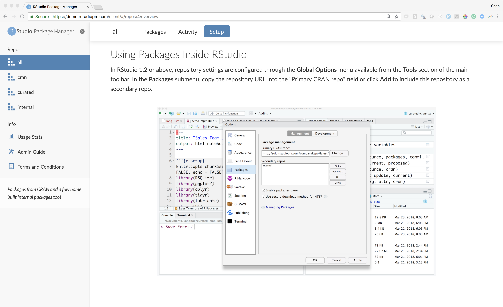
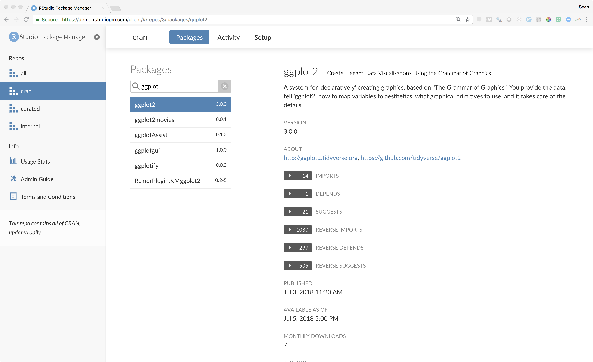
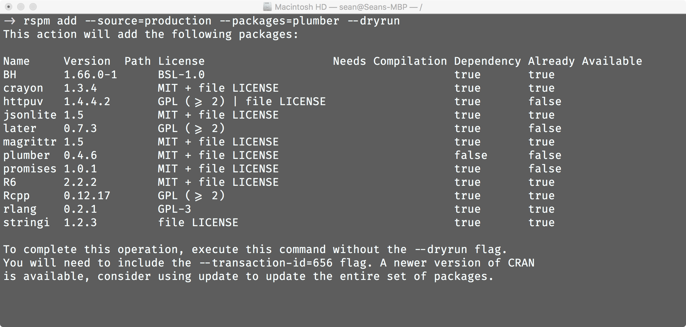
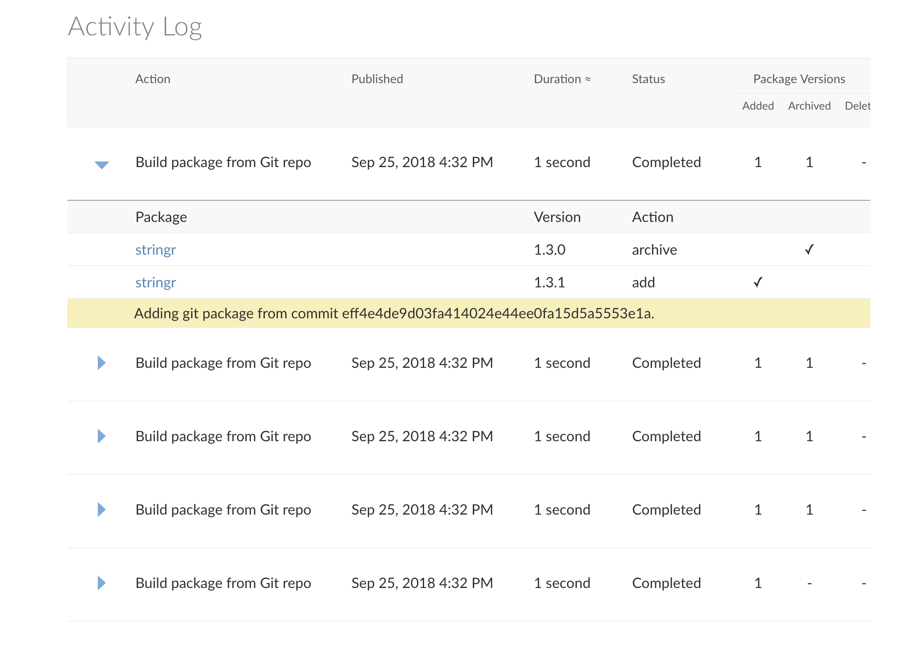
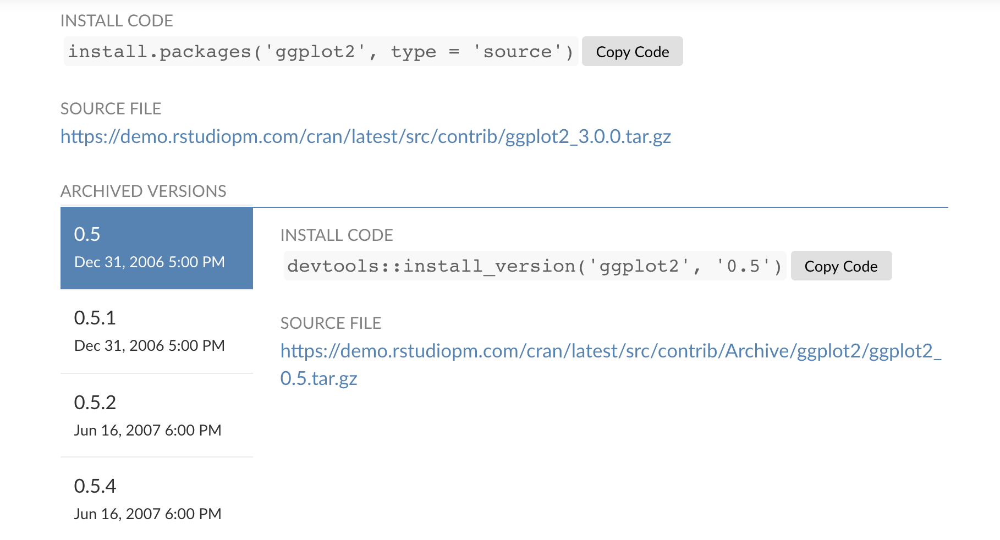
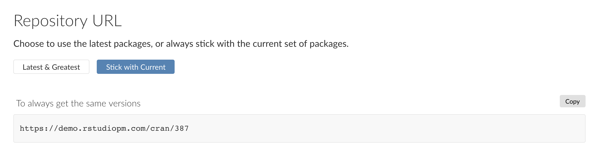
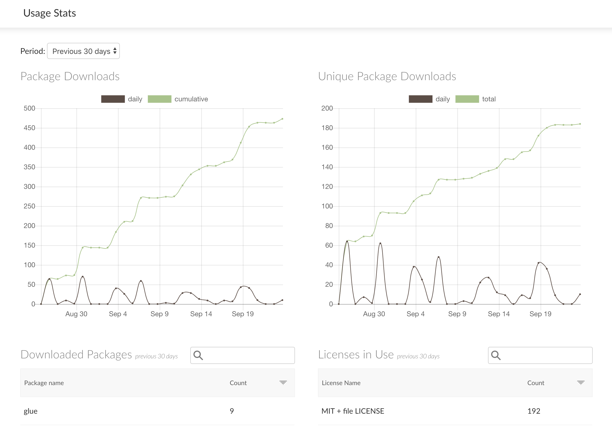

2018-10-17
We’re excited to announce the general availability of our newest RStudio professional product, RStudio Package Manager. RStudio Package Manager helps your team, department, or entire organization centralize and organize R packages.
Get started with the 45 day evaluation today!
With more than 13,000 packages in the R ecosystem, managing the packages you and your teams need can be challenging. R users naturally want the latest, but everyone benefits from reproducibility, stability, and security in production code.

RStudio Package Manager is an on-premises server product that allows R users and IT to work together to create a central repository for R packages. RStudio Package Manager supports your team wherever they run R, from bash scripts and Docker containers to RStudio, RStudio Server (Pro), Shiny Server (Pro), and RStudio Connect.

Administrators set up the server using a scriptable command line interface (CLI), and R users install packages from the server with their existing tools.

We’ve spent the last year working with alpha and beta customers to ensure RStudio Package Manager is ready to meet the needs of your development and production use cases.
If you’re an R user, you know about CRAN. If you’re someone who helps R users get access to CRAN, you probably know about network exceptions on every production node. With RStudio Package Manager, you can enable your R users to access CRAN without requiring a network exception on every production node. You can also automate CRAN updates on your schedule. You can choose to optimize disk usage and only download the packages you need or, alternatively, download everything up-front for completely offline networks.
Currently, RStudio Package Manager does not serve binary packages from CRAN – only source packages. This limitation won’t affect server-based users, but may impact desktop users. Future versions of RStudio Package Manager will address this limitation.

We know some projects call for even tighter restrictions. RStudio Package Manager helps admins create approved subsets of CRAN packages, and ensures that those subsets stay stable even as packages are added or updated over time.

Sharing internal R code has never been easier. Administrators can add internal packages using the CLI. If your internal packages live in Git, RStudio Package Manager can automatically track your Git repositories and make commits or tagged releases accessible to users. The same tools make it painless to supplement CRAN with R packages from GitHub.

Regardless of your use case, RStudio Package Manager provides a seamless experience optimized for R users. Packages are versioned, automatically keeping older versions accessible to users, tools like Packrat, and platforms like RStudio Connect.

RStudio Package Manager also versions the repositories themselves, preserving the ability to always return the same set of R packages or receive the latest versions.

RStudio Package Manager records usage statistics. These metrics help administrators conduct audits and give R users an easy way to discover popular and useful packages.

Get started with the 45-day evaluation or check out our demo server. Read the admin guide for answers to more questions and a guide to installation and setup. Contact Sales for more information.